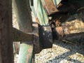

fotosavjeti
fokus
 Jedna od stvari koje najviše utječu na dojam o fotografiji i njezin ugođaj je
fokus. Pri promatranju fotografije ljudsko oko podsvjesno biva privučeno prema
određenim dijelovima slike. Pažnju najviše privlače područja slike koja se ističu
oštrinom detalja (područja koja su u fokusu) i područja koja imaju veliki kontrast
u odnosu na okolinu. Zbog toga je fokusiranje jedna od kritičnih faza fotografiranja.
Jedna od stvari koje najviše utječu na dojam o fotografiji i njezin ugođaj je
fokus. Pri promatranju fotografije ljudsko oko podsvjesno biva privučeno prema
određenim dijelovima slike. Pažnju najviše privlače područja slike koja se ističu
oštrinom detalja (područja koja su u fokusu) i područja koja imaju veliki kontrast
u odnosu na okolinu. Zbog toga je fokusiranje jedna od kritičnih faza fotografiranja.
S razvojem digitalne fotografije i računalne obrade fotografija dolazimo do još jednog argumenta o važnosti fokusa. Radi se o tome da je računalnom obradom moguće kompenzirati većinu manjih grešaka, ali fokus fotografije je vrlo teško uvjerljivo popraviti. Ostale elemente kao što su ekspozicija, balans i zasićenje boja i sl. je relativno lako ispraviti ako se ne radi o velikom pomaku od idealne vrijednosti. Čak i ako je prilikom snimanja došlo do male trešnje aparata moguće je algoritmom Unsharp mask popraviti stvar, ali krivo fokusiranu fotorafiju je nemoguće uvjerljivo ispraviti.
U fotografskom kontekstu fokus je određen objektivom fotoaparata i njegovom fokusnom duljinom. Osim samog fokusa bitan utjecaj ima i dubinska oštrina, koja osim fokusne duljine ovisi i o otvoru blende. Što je manji otvor blende to će veći prostor biti u području dubinske oštrine i izgledati izoštreno. Više o osnovama optike možete pročitati u članku teorija fotografije.
Fokus i dubinska oštrina su bitna sredstva izražavanja jer pomoću njih možemo  vrlo efektno pokazati koji dio slike je bitan, i isto tako ostavljajući neke elemente fotografije neizoštrenima sugeriramo onome tko gleda sliku da oni nisu bitni. Taj princip se naziva dubinska izolacija i izravno je povezan sa dubinskom oštrinom fotografije. Što više otvorimo blendu to će se objekti koji su u fokusnoj ravnini ili u blizini više isticati oštrinom i detaljima.
{kind=link}
autofokus
Do prije dvadesetak godina rijetki fotoaparati su imali mogućnost da automatski podese fokus. Umjesto toga trebalo je ručno podesiti fokus što je bilo sporo, nespretno i ne baš jako precizno. Pogotovo je bilo teško dobro podesiti fokus na teleobjektivima koji inače imaju malu dubinsku oštrinu i svaka pogreška pri fokusiranju je dolazila do izražaja. Ako se radilo o fotografiranju dinamičnih scena kao štu su sport ili životinje u pokretu tada je ručno fokusiranje bilo vrlo teško izvedivo i nepouzdano. Trebalo je pokušati predvidjeti kretanje objekta i unaprijed izoštriti na udaljenost na kojoj će se objekt tek naći. Takav način fotografiranja je bio vrlo nepouzdan i jako mali broj fotografija bi uspio ispasti korektno fokusiran.
Zbog svih tih problema se pojavila potreba za sustavom koji bi automatski detektirao udaljenost objekta od fotoaparata i pomoću servomotora u objektivu fokusirao taj objekt. Naravno, razvojem elektronike i fine mehanike to je bilo izvedivo ali i skupo. Zato su fotoaparati sa sustavom autofokusa dugo bili rijetka i ekskluzivna pojava.
Prvi autofokus sustavi su radili na principu odašiljanja infracrvenog snopa svjetlosti prema sredini kadra i detektiranja vremena koje je potrebno da se zraka IC svjetla vrati u senzor. Na taj način je bilo moguće fokusirati samo predmete koji se nalaze u središtu kadra, ali i to je bio veliki pomak naprijed.
S pojavom digitalnih aparata otvorile su se nove mogućnosti za konstrukciju sustava za autofokus. Kadar ispred objektiva se ionako stalno analizira da bi se odredili parametri osvjetljenja, pa je to iskorišteno i za autofokus. Kod digitalnih aparata više nema potrebe slati svjetlosne zrake kad već imamo informacije o kadru u obliku električkih impulsa. U jeftinijim fotoaparatima se koristi princip detektiranja rubova predmeta na način da se odredi područje koje bi moglo biti rub nekog predmeta i tada se leće pomoću servomotora pokreću da bi se postigao što veći kontrast na tom području. Ovakav način se pokazao prilično pouzdanim, samo što je relativno spor. Za većinu situacija je sasvim dovoljan, ali kod fotografiranja objekata koji se brzo kreću ipak je prespor. Zato je za SLR aparate razvijen sustav koji analizira sliku kadra u dvije faze i uspoređuje fazni pomak između njih. Kad signal za određeni dio slike nema faznog pomaka znači da je objekt u tom dijelu slike točno u fokusu. Osim toga unaprijeđeni su i algoritmi detekcije ključnog objekta u kadru, tako da postoje uvjetno rečeno inteligentni sustavi koji sami biraju koji dio kadra će biti fokusiran. Takvi sustavi odvojeno analiziraju nekoliko različitih područja slike pokušavajući pomoću nekih parametara otkriti najvažniji dio kadra i na njega fokusirati.